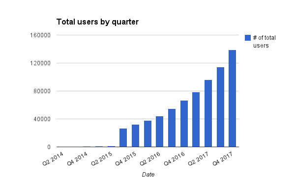
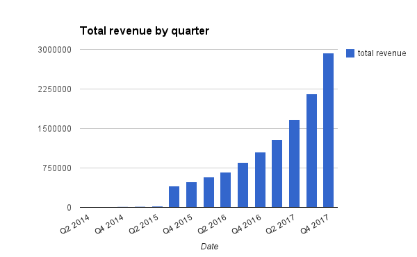

Huge shift in healthcare policy with Affordable Care Act
Large growth in self-tracking
4.3 million preventable hospitalizations yearly in the US (CDC)
Cost of $10,000 per hospital stay (AHRQ)
The trend towards lowering hospital costs and increasing patient satisfaction metrics shows no sign of slowing down
Wearable device adoption is vastly increasing
Recurring subscriptions
App store model
Vik Paruchuri, co-founder
Adam Laughlin, co-founder
 